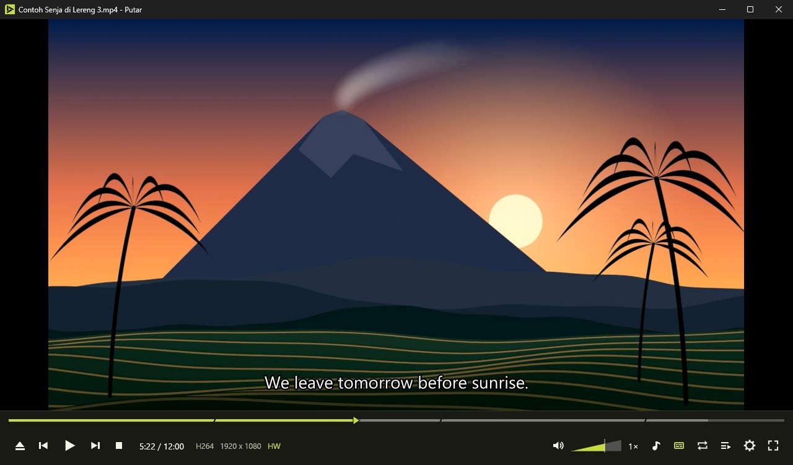
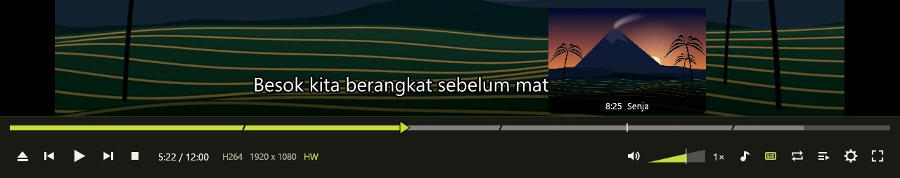
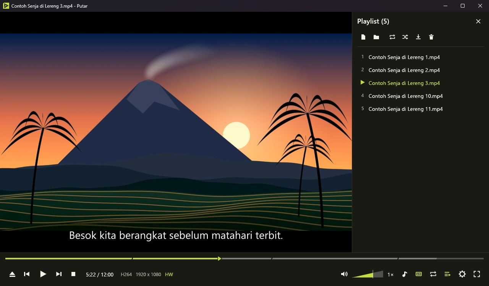
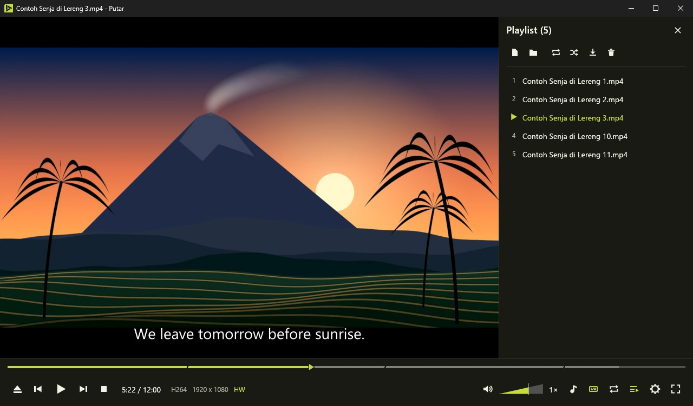
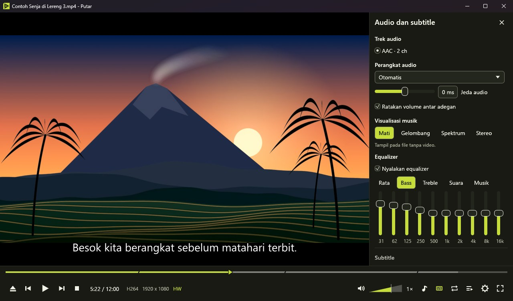
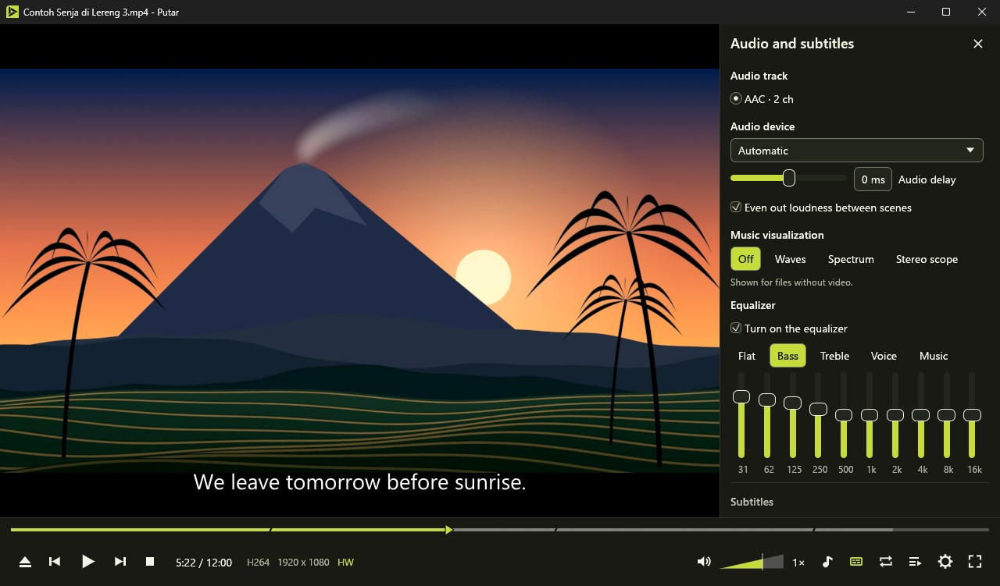
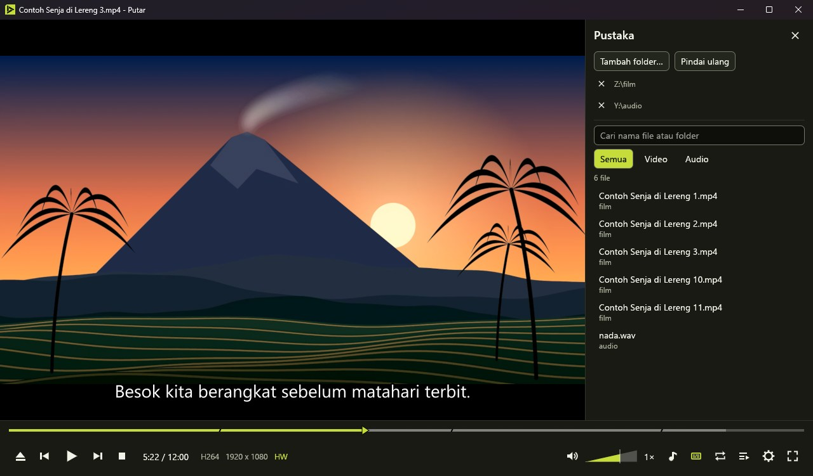
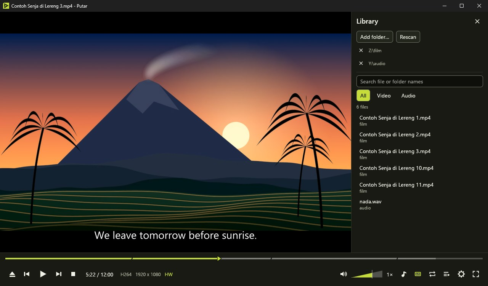

Putar memutar film Anda tanpa menyuruh Anda memasang codec. Putar plays your films without asking you to install codecs.
Pemutar video dan audio untuk Windows. mpv dan FFmpeg sudah ada di dalamnya, bilah kontrolnya selalu terlihat di bawah gambar, dan tidak ada iklan. A video and audio player for Windows. mpv and FFmpeg are already inside, the controls stay visible below the picture, and it shows no ads.


- Garis waktuTimeline
- Sorot untuk melihat gambar di menit itu. Bab tampil sebagai potongan miring, dan bagian yang diulang dengan A-B ikut ditandai.Hover to see the picture at that minute. Chapters appear as slanted cuts, and the part you repeat with A-B is marked too.
- IndikatorIndicators
- Codec, resolusi, dan HW atau SW: apakah kartu grafis ikut mengerjakan decoding, atau prosesor saja.Codec, resolution, and HW or SW: whether the graphics card helps with decoding, or the processor does it alone.
- VolumeVolume
- Baji yang menebal ke kanan, sampai 150%. Roda mouse di atas video juga mengubahnya.A wedge that thickens to the right, up to 150%. The mouse wheel over the video changes it too.
- KecepatanSpeed
- Dari 0,25x sampai 4x. Titik dan koma memindah gambar satu frame.From 0.25x to 4x. The period and comma keys move the picture one frame.
Buka satu episode, sisanya ikut antreOpen one episode, the rest line up
Putar mengambil file sejenis di folder yang sama dan mengurutkannya seperti Explorer, jadi episode 2 datang sebelum episode 10.Putar picks up similar files from the same folder and sorts them the way Explorer does, so episode 2 comes before episode 10.
Tutup kapan saja. Saat file dibuka lagi, Putar melanjutkan dari menit terakhir dan memberi tombol untuk mulai dari awal.Close it whenever you like. When you open the file again, Putar carries on from the last minute and offers a button to start over.
- Beberapa file yang dipilih di Explorer masuk ke satu jendela dan satu playlist.Several files selected in Explorer open in one window and one playlist.
- Ulangi satu file atau semua, acak urutan, dan simpan playlist ke M3U8.Repeat one file or all of them, shuffle, and save the playlist as M3U8.
- Playlist diingat, jadi Anda bisa melanjutkannya setelah Putar dibuka lagi.The playlist is remembered, so you can continue it after Putar reopens.
- Riwayat hanya tersimpan di komputer Anda dan bisa dihapus dari Pengaturan.History stays on your computer, and you can delete it in Settings.




Atur subtitle, suara, dan gambar sambil menontonAdjust subtitles, sound, and picture while you watch
SubtitleSubtitles
- File subtitle bernama mirip dimuat otomatis, atau seret saja ke jendela.A subtitle file with a similar name loads by itself, or you can drop one on the window.
- Geser waktunya per 100 milidetik dengan Z dan X, lalu atur ukuran, posisi, warna, dan latarnya.Shift the timing by 100 milliseconds with Z and X, then set the size, position, color, and background.
- Dua subtitle sekaligus, satu di bawah dan satu di atas gambar.Two subtitles at once, one below and one above the picture.
- Cari subtitle online lewat OpenSubtitles. Layanan ini butuh kunci API gratis dari mereka.Search subtitles online through OpenSubtitles. The service needs a free API key from them.
SuaraSound
- Pilih trek audio dan perangkat keluaran.Choose the audio track and output device.
- Equalizer 10 pita dengan lima preset, dan perata volume antar adegan.A 10-band equalizer with five presets, and loudness levelling between scenes.
- Visualisasi musik untuk file tanpa video: gelombang, spektrum, atau stereo.Music visualization for files without video: waves, spectrum, or stereo scope.
GambarPicture
- Rasio, rotasi, perbesaran, kecerahan, kontras, saturasi, gamma, rona, dan deinterlace.Aspect ratio, rotation, zoom, brightness, contrast, saturation, gamma, hue, and deinterlacing.
- Tangkap layar ke PNG atau JPEG.Screenshots as PNG or JPEG.
Temukan film Anda, lalu tonton sambil bekerjaFind your films, then watch while you work
Pilih folder film dan musik Anda, lalu cari berdasarkan nama. Putar hanya membaca nama filenya di komputer ini.Choose your film and music folders, then search by name. Putar only reads the file names on this computer.
- Penanda waktu per file yang tetap ada sampai Anda menghapusnya.Per-file time bookmarks that stay until you delete them.
- Mode kecil: jendela tanpa bingkai yang selalu di atas. Tekan Esc untuk kembali.Mini mode: a borderless window that stays on top. Press Esc to go back.
- Tombol media di keyboard dan panel media Windows bekerja, juga saat Putar diminimalkan.Keyboard media keys and the Windows media panel work, also while Putar is minimized.
- Setelah playlist selesai, Putar bisa menutup diri, menidurkan komputer, atau mematikannya setelah hitung mundur yang bisa dibatalkan.When the playlist ends, Putar can close itself, put the computer to sleep, or shut it down after a countdown you can cancel.
- Alamat halaman situs video bisa dibuka setelah Anda memasang yt-dlp dari Pengaturan.Video site page addresses open after you install yt-dlp from Settings.


Tangan bisa tetap di keyboardYour hands can stay on the keyboard
Dua belas pintasan utama ada di bawah. Tekan F1 di Putar untuk melihat semuanya dan mengubah yang tidak cocok untuk Anda. Tab berpindah antar kontrol.The twelve main shortcuts are below. Press F1 in Putar to see them all and change any that don't suit you. Tab moves between controls.
- SpasiSpace
- Putar atau jedaPlay or pause
- ← →
- Mundur atau maju 5 detikBack or forward 5 seconds
- Ctrl + ← →
- Mundur atau maju 30 detikBack or forward 30 seconds
- 0 sampaito 9
- Lompat ke 0% sampai 90%Jump to 0% through 90%
- ↑ ↓
- Volume naik atau turunVolume up or down
- M
- Matikan atau nyalakan suaraMute or unmute
- [ ]
- Lebih lambat atau lebih cepatSlower or faster
- L
- Tandai A, tandai B, matikan ulang A-BMark A, mark B, turn off A-B repeat
- V
- Ganti subtitleNext subtitle
- S
- Tangkap layarTake a screenshot
- N P
- File berikutnya atau sebelumnyaNext or previous file
- F
- Layar penuhFull screen
Yang belum bisaWhat it can't do yet
Daftar ini berisi yang biasa ada di pemutar lain, tetapi belum ada di sini.This list covers what other players often have and Putar doesn't yet.
Sampaikan yang paling Anda butuhkan di KomunitasTell us what you need most in the Community
- Menu DVD dan Blu-ray. Putar langsung memutar judul utamanya.DVD and Blu-ray menus. Putar plays the main title directly.
- Blu-ray yang diproteksi.Protected Blu-ray discs.
- CD audio.Audio CDs.
- Mengonversi atau memotong video.Converting or cutting video.
- Mengirim video ke TV.Sending video to a TV.
- macOS dan Linux.macOS and Linux.
Unduh Putar 1.0.0Download Putar 1.0.0
Unduh installerDownload the installerPutar-Setup-1.0.0.exe · 34.8 MB
Semua rilisAll releases LisensiLicense Komponen pihak ketigaThird-party components Sumber mpv dan FFmpegmpv and FFmpeg source
Gratis, untuk Windows 10 atau 11 64-bit dengan OpenGL 3. Sejauh ini diuji di Windows 11 dengan kartu grafis Intel.Free, for 64-bit Windows 10 or 11 with OpenGL 3. So far it has been tested on Windows 11 with Intel graphics.
Installer belum ditandatangani, jadi SmartScreen bisa memperingatkan: pilih Info selengkapnya, lalu Jalankan saja. Antivirus juga bisa menahannya sebentar saat pertama dijalankan.The installer isn't signed yet, so SmartScreen may warn you: choose More info, then Run anyway. Antivirus software may also hold it for a moment the first time.
Putar terpasang di folder Anda sendiri tanpa hak administrator dan muncul di menu Buka dengan. Pemutar bawaan Anda tidak berubah sampai Anda sendiri menggantinya.Putar installs in your own folder without administrator rights and appears in the Open with menu. Your default player stays as it is until you change it yourself.
Setelah terpasang, Putar memberi tahu saat ada versi baru dan memasangnya sendiri bila Anda setuju.Once installed, Putar tells you when a new version is out and installs it if you agree.
2eb77b7a2d6c0f02cef969ab20b789a0b6937d9f05be39f41c92676f2143cd57